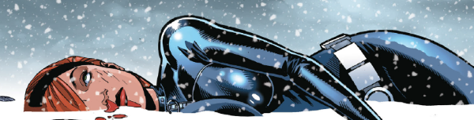

A space-faring secret agent does space-faring secret agenty things.
Art by Laurence Campbell, David Roach & Gary Caldwell
| Story Title | Parts | Pages | w indicates a wraparound coverCovers | Year(s) | Issues | Writer | Artist | Colourist | Letterer |
|---|---|---|---|---|---|---|---|---|---|
| Facing Mecha | 9 | 46 | 1364: Ian Gibson 1370: Laurence Campbell Chris Blythe (colours) 2 | 2003 | Reprints: M368 (supplement)1362-1370 | Colin Clayton Chris Dowsvarious | Laurence Campbell (P) Lee Townsend (I)various | Gary Caldwell | Ellie de Ville |
| Recalibration | 3 | 15 | 1416: Ben Oliver 1 | 2004 | Reprints: M368 (supplement)1416-1418 | Colin Clayton Chris Dowsvarious | Laurence Campbell (P) David Roach (I)various | Gary Caldwell | Ellie de Ville |
| Arc of Light | 4 | 21 | 1473: Dylan Teague 1 | 2006 | Reprints: M369 (supplement)1473-1476 | Colin Clayton Chris Dowsvarious | David Roach | Gary Caldwell | Annie Parkhouse |
| year | episodes | pages |
| 1994 | 0 | 0 |
| 1995 | 0 | 0 |
| 1996 | 0 | 0 |
| 1997 | 0 | 0 |
| 1998 | 0 | 0 |
| 1999 | 0 | 0 |
| 2000 | 0 | 0 |
| 2001 | 0 | 0 |
| 2002 | 0 | 0 |
| 2003 | 9 | 46 |
| 2004 | 3 | 15 |
| 2005 | 0 | 0 |
| 2006 | 4 | 21 |
| 2007 | 0 | 0 |
| 2008 | 0 | 0 |
| 2009 | 0 | 0 |
| 2010 | 0 | 0 |
| 2011 | 0 | 0 |
| 2012 | 0 | 0 |
| 2013 | 0 | 0 |
| 2014 | 0 | 0 |
| 2015 | 0 | 0 |